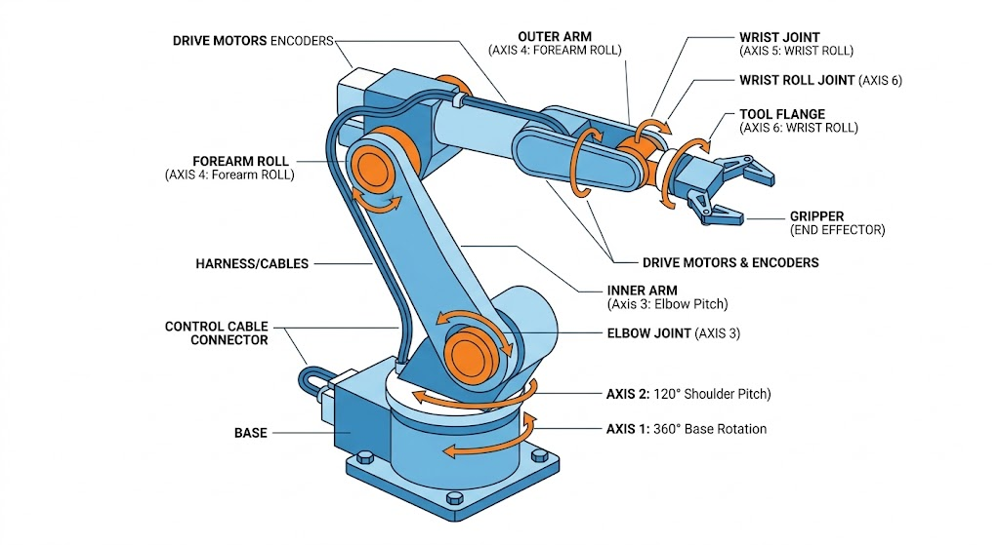
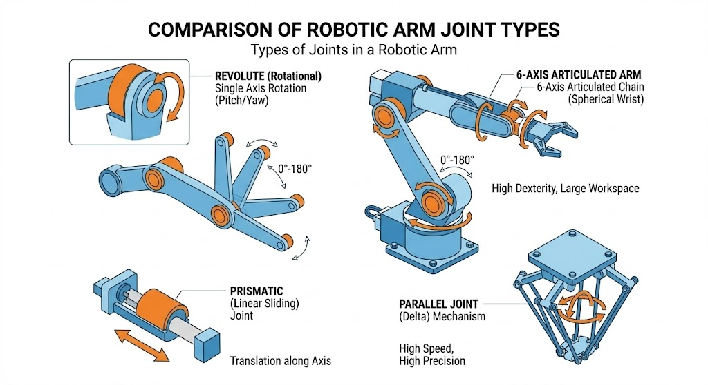
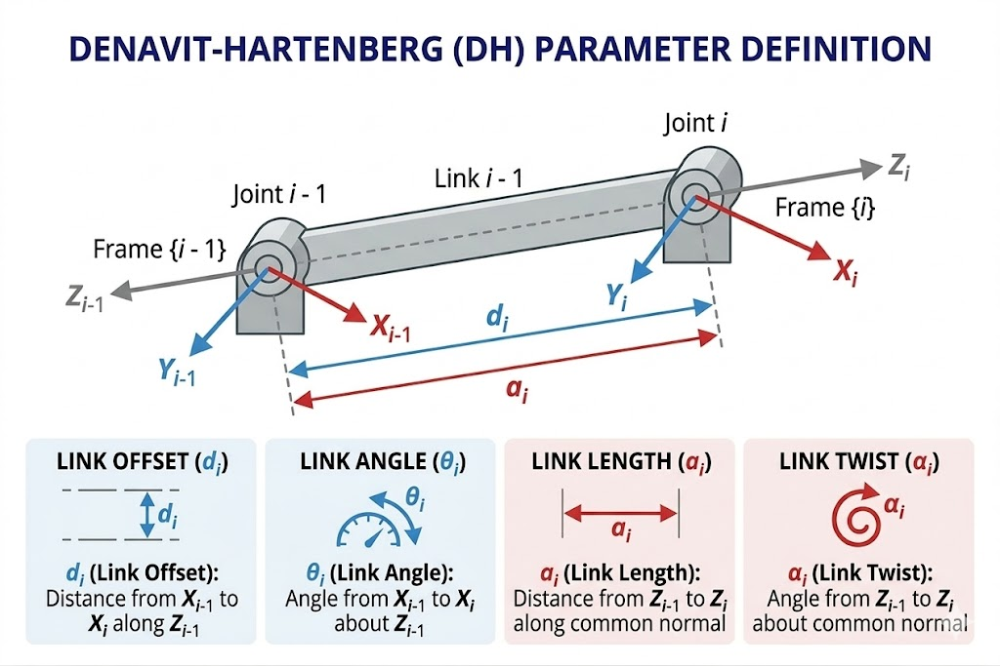
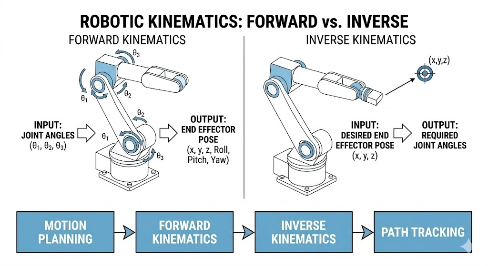
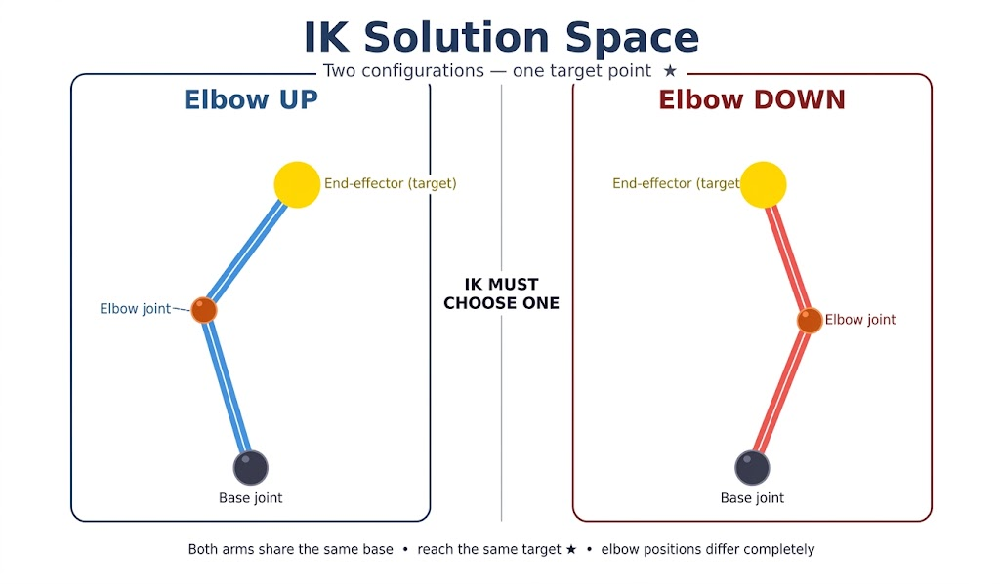
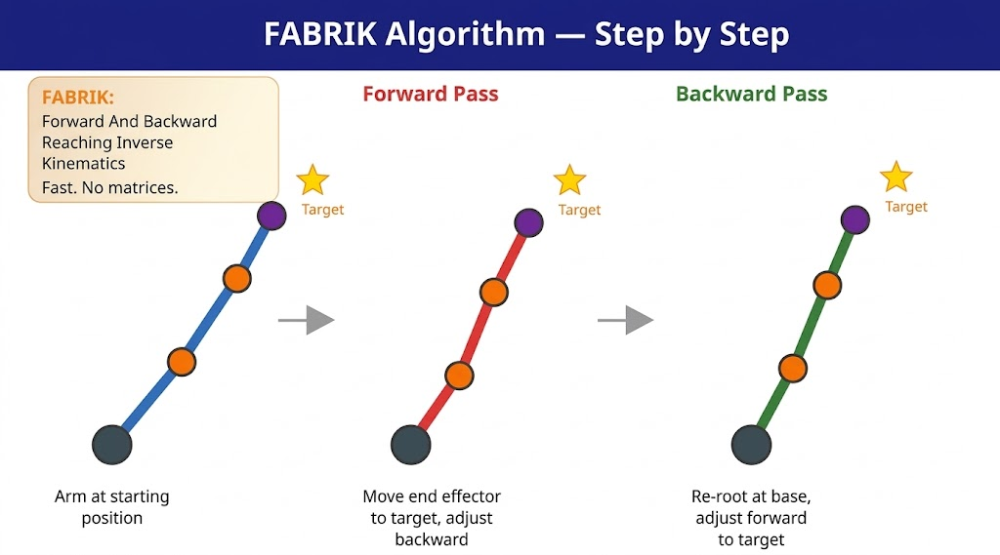
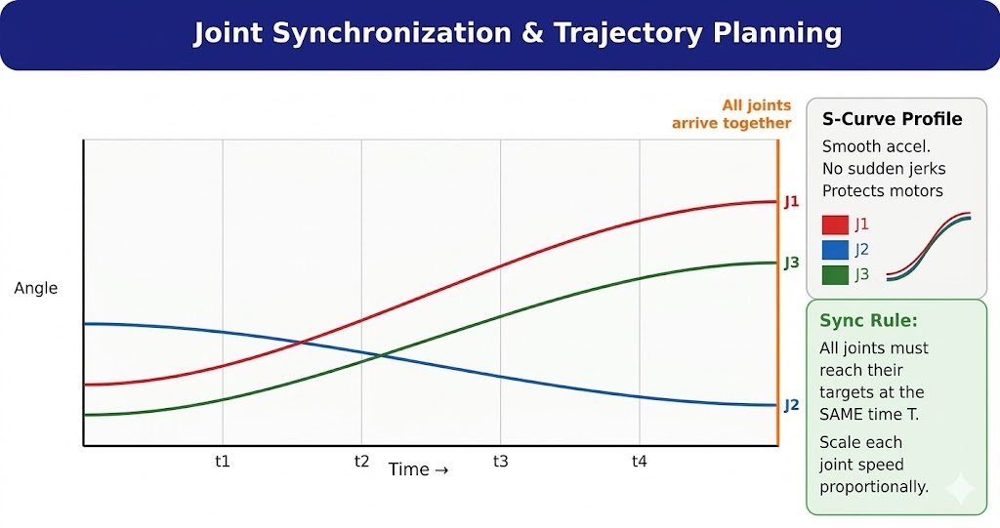

Arm structure, DH parameters, forward and inverse kinematics, FABRIK algorithm and joint synchronization — with diagrams, live calculators and working code.
A robotic arm is a kinematic chain — a series of rigid links connected by joints, mounted on a fixed base, and ending in an end effector (the hand or gripper). The combination of joint types and link lengths defines which positions the hand can reach, and with what orientation.


| DOF Count | Capability | Typical Application |
|---|---|---|
| 3 DOF | Position only (X, Y, Z) — no orientation control | Simple pick-and-place on flat surface |
| 6 DOF | Full position and orientation control Industry standard | KUKA, ABB industrial robots |
| 7 DOF | Redundant — multiple solutions per target, obstacle avoidance | Human arm, NASA Robonaut |
Forward Kinematics (FK) answers: given a set of joint angles, where is the end effector? It works by chaining coordinate frame transformations from the base to the tip. The Denavit-Hartenberg convention is the industry standard — four parameters per joint fully describe the arm's geometry.


| Parameter | Symbol | Meaning | Variable During Motion? |
|---|---|---|---|
| Joint Angle | θ | Rotation around the Z-axis of frame i | Yes — revolute joints |
| Link Offset | d | Translation along the Z-axis to next frame | Yes — prismatic joints |
| Link Length | a | Distance along the X-axis between Z-axes | Fixed by design |
| Link Twist | α | Angle between consecutive Z-axes | Fixed by design |
import math def fk_2dof(t1_deg, t2_deg, L1=150, L2=120): t1 = math.radians(t1_deg) t2 = math.radians(t2_deg) x1 = L1 * math.cos(t1) y1 = L1 * math.sin(t1) x2 = x1 + L2 * math.cos(t1 + t2) y2 = y1 + L2 * math.sin(t1 + t2) return round(x2, 2), round(y2, 2) # Test calls print(fk_2dof(0, 0)) # (270.0, 0.0) print(fk_2dof(90, 0)) # ( 0.0, 270.0) print(fk_2dof(45, -30)) # (152.63, 89.65)
IK answers: given a target position for the end effector, what joint angles are needed? Unlike FK which always gives one answer, IK may have many solutions, one solution, or none at all. Selecting the right configuration requires additional constraints or rules.


| Algorithm | Speed | Accuracy | Near Singularities | Best Use |
|---|---|---|---|---|
| Analytical | Fastest | Exact | Handle manually | Known, fixed arm geometry |
| Jacobian Transpose | Fast | Moderate | Unstable | Far from singularities |
| Damped Least Squares | Medium | Good | Handled | General industrial arms |
| FABRIK | Very fast | Good | Avoidable | Competition / real-time |
import math def fabrik(joints, lengths, target, tol=0.5, max_iter=20): n = len(joints) base = joints[0][:] for _ in range(max_iter): if math.hypot(joints[-1][0]-target[0], joints[-1][1]-target[1]) < tol: break # Forward pass — pull tip to target, adjust chain backward joints[-1] = target[:] for i in range(n - 2, -1, -1): d = math.hypot(joints[i+1][0]-joints[i][0], joints[i+1][1]-joints[i][1]) r = lengths[i] / d joints[i] = [(1-r)*joints[i+1][0]+r*joints[i][0], (1-r)*joints[i+1][1]+r*joints[i][1]] # Backward pass — re-anchor base, adjust chain forward joints[0] = base[:] for i in range(n - 1): d = math.hypot(joints[i+1][0]-joints[i][0], joints[i+1][1]-joints[i][1]) r = lengths[i] / d joints[i+1] = [(1-r)*joints[i][0]+r*joints[i+1][0], (1-r)*joints[i][1]+r*joints[i+1][1]] return joints # Three-link arm reaching target (200, 100) j = [[0,0],[100,0],[200,0],[300,0]] print(fabrik(j, [100,100,100], [200,100])[-1]) # ~[200, 100]
Synchronization ensures every joint of the arm starts and stops at exactly the same time, regardless of how far each joint needs to travel. Without it, joints arrive at different times — creating unpredictable intermediate arm shapes and potential self-collisions. The joint with the longest angular travel sets T_sync; all others are proportionally scaled.

class SyncPlanner: def __init__(self, omega_max=60.0): self.omega_max = omega_max def plan(self, current, target): deltas = [abs(t - c) for c, t in zip(current, target)] T = max(d / self.omega_max for d in deltas) if max(deltas) > 0 else 1.0 return T, deltas def position(self, t, T, current, target): u = max(0, min(1, t / T)) s = u * u * (3 - 2 * u) # S-curve smooth-step return [c + (tg - c) * s for c, tg in zip(current, target)] sync = SyncPlanner(omega_max=60) T, _ = sync.plan([0, 0, 0], [90, 30, 60]) print(f"T_sync = {T:.2f} s") # 1.50 s print(sync.position(0.75, T, [0,0,0], [90,30,60])) # [45.0, 15.0, 30.0]
| Requirement | Specification |
|---|---|
| Control algorithm | IK solver with synchronized trajectory planner |
| Primary sensor | Encoders on every joint |
| Safety cutoff | Joint limit violated or velocity exceeds 2× rated speed |
| Sync tolerance | Divergence must stay below 2° at all timestamps |
| Frame convention | Denavit-Hartenberg — Z_i is axis of joint i+1 |
| Required documentation | DH parameter table, TCP definition, joint angle limits |